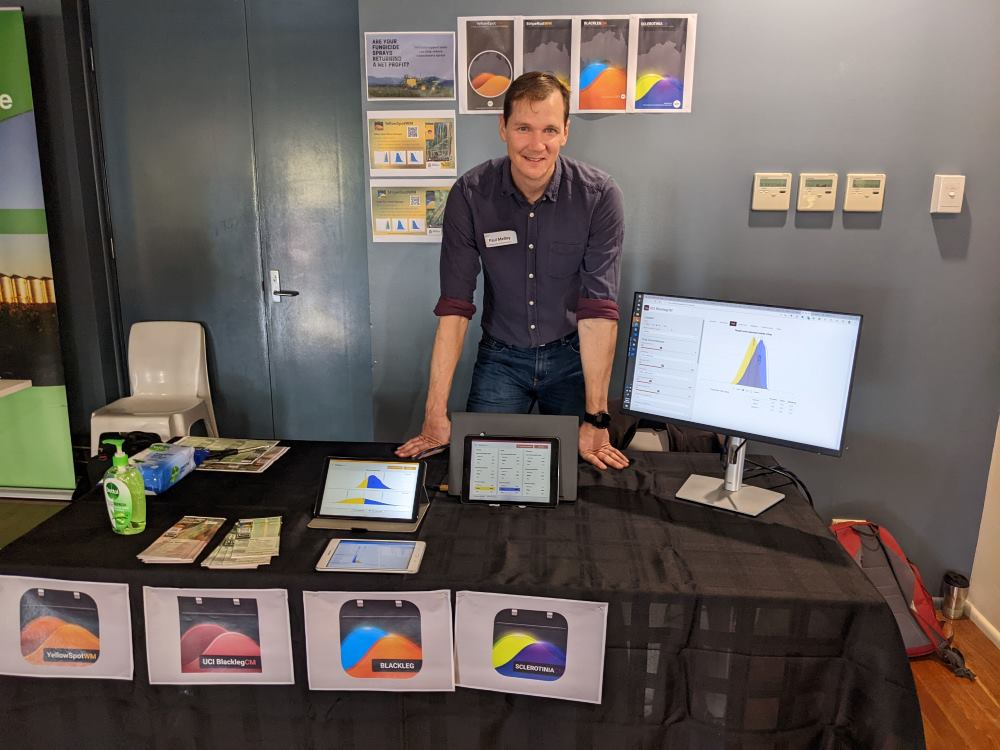

Paul Melloy
2022-08-08
I am a Plant Pathologist at the University of Queensland. I specialise in modelling crop diseases and building decision support tools.

Recent work
GRDC Update - Miles - Pitsworth - Goondiwindi
July 2022
At the end of July, I travelled around South East Queensland to the GRDC Updates to present the decision support tools which have been developed on the GRDC funded project I am involved with. A second la nina at the start of 2022 has provided a lot of moisture which are likely to lead to heavy losses to foliar diseases if crops are not managed well for disease.
The main apps we were presenting for the Northern grains region were StripeRustWM and YellowSpotWM.
There was a lot of interest in the applications and many were not yet familiar with the available suit of decision support tools (DST). With a full moisture profile across many of the cropping areas those who were able to sow had more options. With seemingly more growers from the Goondiwindi region going into canola. Some farm managers were therefore interested in the canola DSTs SclerotiniaCM, and UCI BlackLegCM.

Farms Advice - Plant disease modelling interview
June 2022
I had a great chat with ABC rural trailblazer Jack Cresswell on his Farms Advice podcast.
Follow this link to the interview.
Or search for ‘Farms Advice’ in your podcast app.
Simulation model for ascochyta blight
May 2022
ascotraceR is an R package which simulates ascochyta
blight epidemics in chickpea crops. You can find ascotraceR
on CRAN, and a resource announcement in Phytopathology.
Is UniSuper’s Defined Benefit Division fund worthwhile Shiny App
May 2022
Choice of superannuation is not the first type of research people like to do when starting a new job. Most people want to finish the induction paperwork and financial forms as quickly as possible so they can commence diligently working for their new employer. Therefore I gather most people would not fully dedicate their time to trying to understand ‘What is a defined benefit division?’ and ‘Is it the best super product for me?’. I certainly did not when I started work with the University of Southern Queensland almost four years ago. I was coerced into UniSupers DBD and only 3 years down the track I realise it was not for me.
When checking up on my super balance, shortly after starting work at The University of Queensland, I noticed that the total contributions I made from my salary after tax exceeded the fund balance. Suffice to say, I liken the DBD to a pyramid scheme which only benefits people who are over the age of 50. In fact it is almost impossible to have a positive net return if you exit the fund before the age of 46.
To help people understand how the DBD is calculated I created a shiny app which can be found at the following link https://paulmelloy.shinyapps.io/UniSuperDBD/
2022 Election shiny app
May 2022
I have been working on a shiny app to help a political party I am a
member of, the Fusion Party,
Science, Pirate, Secular and Climate Emergency
Parties
The shiny app was made to easily convert electoral boundaries data from
shape file to KML file so they could be uploaded on a
shared Google maps. Needless to say the app expanded monstrously when I
found more data on the AEC
website.
I included some analysis of voting preferences by division and voting
booth, including expected voter turnout to booths.
Check out the app at https://paulmelloy.shinyapps.io/22_electoralboundaries/
Estimating leaf temperature from NASA satellite data
April 2022
I wrote a blog, published on OpenPlantPathology’s website, for how to
use R to estimate leaf temperatures from data retrieved using the
nasapower R package. Then plugging the data into functions
from the R package tealeaves. The result is being able to
estimate the leaf temperature for any where on the planet.
Click here to read the blog post
Efficient control of powdery mildew in mungbeans
November 2021
This paper uses meta-analytic methods to examine 16 field trials over eight seasons assessing fungicide spray timing for control of powdery mildew.